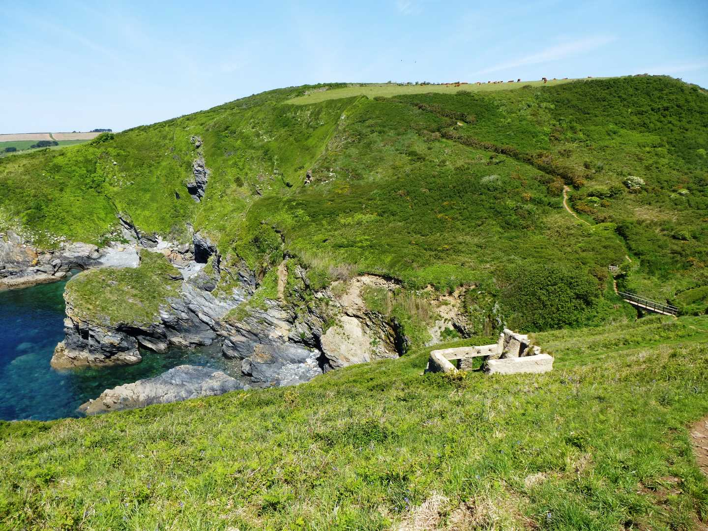
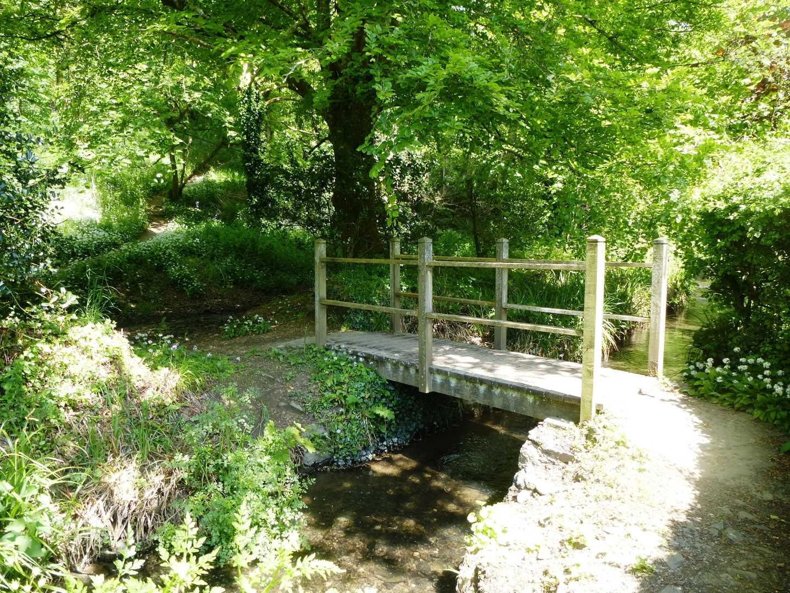

Start Ref: 916 396
End Ref: 916 396
Distance: 8.5 miles
Time: 5hrs
We start our walk in the lovely village of Veryan, but please park with consideration for the villagers. There are Public Toilets here, a shop and a very good pub. Just below the Church is the village pond and park and it is through this that we are going to leave the village. Through the play park we will find a little granite footbridge and stile that leads out in to the field with a large solitary tree standing in it. Follow to the tree and then head up the slope towards the top left corner of this field where we pass through a gate and a small copse of trees before coming out in another field. If we go East through this field, we come to a gate that leads us down alongside a few houses and then out on to the road.
As we join this road we want to go (effectively) straight across and down the road to Trewartha. This road, turns in to a bridleway and then turns right as it enters the farm. It is signposted well as we then turn left and take the left hand gate into another field. Approximately 200m along the hedge on our right, we will find a set of granite steps over the hedge, which lead us into a field which will slope down the valley and bring us out in what appears to be someone’s garden, but is part of the footpath. The path carries on and leads us to the road where we turn left and walk down to the slipway at Portloe.
After enjoying the slipway, we follow the coastal path (to the right as we look out to sea) and follow it to Jacka Point. The path splits before we get there, but it is worth the very short detour to enjoy the view. As we head up and away from Jacka Point, the path again splits. Here we can either follow inland, or continue to follow the coastal path, which is the route we are taking today as we follow along the top of the cliffs but also along the side of fields. Slowly the terrain changes and we find ourselves surrounded by large conifers and see on our right hand side Broom Parc, which is a National Trust owned property and section of land (they must have a truly splendid view).
As we leave the conifers the path becomes surrounded by furze and bracken and starts to wind steeply downhill, at which point I was certainly glad that I have done this walk in this direction. At the bottom of the path there is a bench which I utilized fully for a cup of tea and to enjoy the view before continuing on again.
Over a footbridge we go and then again start rising up as the footpath follows the cliffs up and around Kiberick Cove. Thankfully for us, the path stays up high and does not drop down and then back up again, but instead cuts across a field and then we need to bear left to head out to Nare Head, rather than going straight and on to the car park. As we follow the path around we find ourselves in an important WWII site for confusing the Nazi Luftwaffe and a little further along we see the entrance to the Cold War Nuclear Bunker. Potentially so much war associated with such a beautiful spot.
As we follow the headland around the path drops down and we go pass the abandoned cob house hear Tregagle`s Hole, and the beautiful and secluded stony beach that is here. A deep breath and then we climb back up the other side of the valley as the well marked footpath now leads us on towards Carne Beach. Once here, the footpath has been redirected around the back of the Nare Hotel, but it is well signposted as you pass the helicopter landing spot!
A short distance further and we reach Pendower Beach, where we have Public Toilets and the chance of a swim or refreshment.
Now we start to head inland, and to do this we must go to the back of the National Trust car park, where there is a narrow path that will lead us through a shaded wooded valley and alongside a gently flowing stream. This path leads us up to Lower Mill, where there is a small footbridge that crosses the stream (in front of the houses) and then leads again up the valley edge before dropping down and coming out at Melinsey Mill.
Now we are off the footpaths and are entirely on road as we make our way back towards Veryan. To do this we turn right as we come off the footpath and keep Melinsey Mill on our left as we head up the (steep) road. This road we will follow now for the last ¾ mile until we reach Veryan and come out at the crossroads just above the pub, before finding where we left our car – unless we call in at the pub first (non alcoholic for drivers of course).
This is a slightly longer walk, which will take up a fair chunk of our day, but the scenery is well worth the distance and the beaches that we come across give us great ideas for further family days when the sun is shining (or even if it is not).
We hope that you will enjoy this walk.